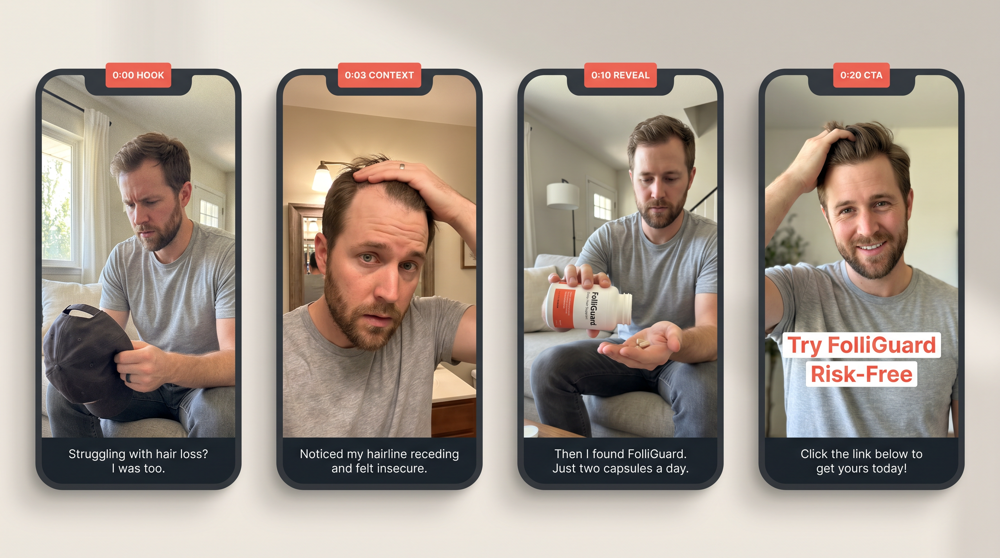
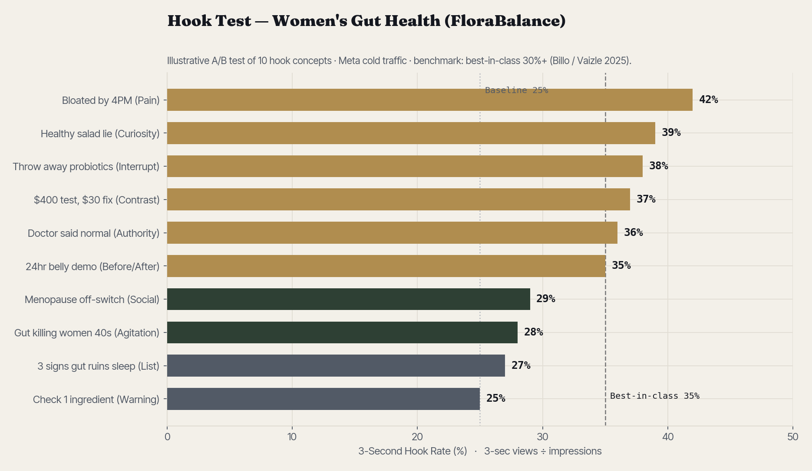
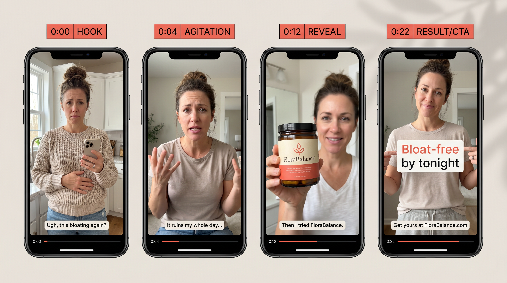
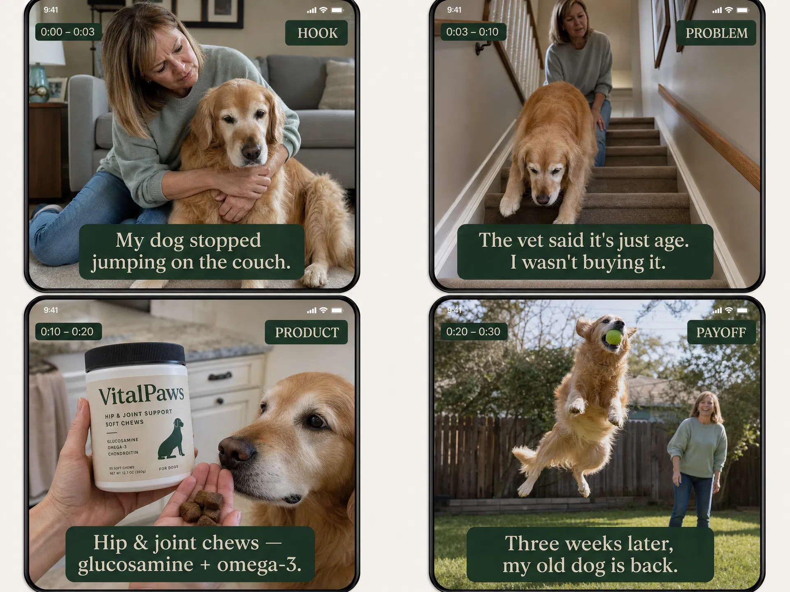
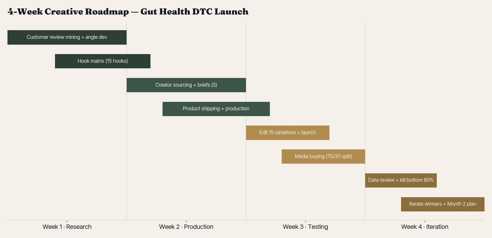
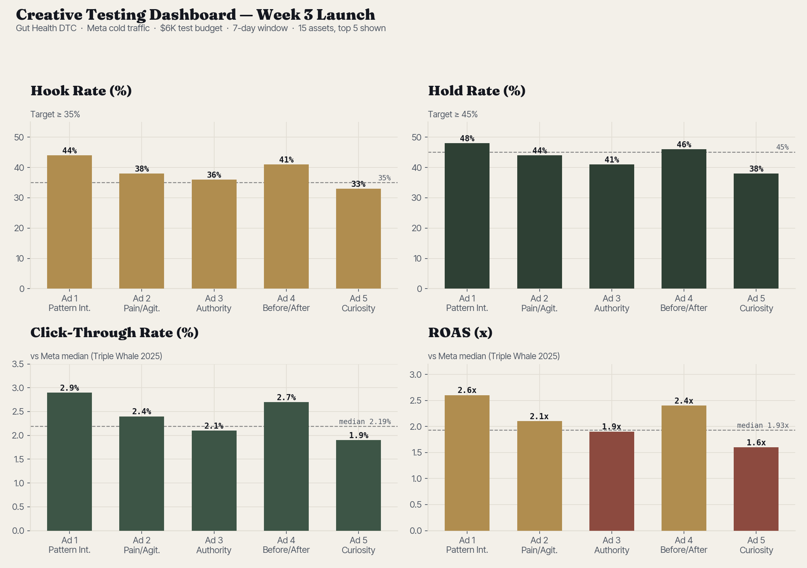
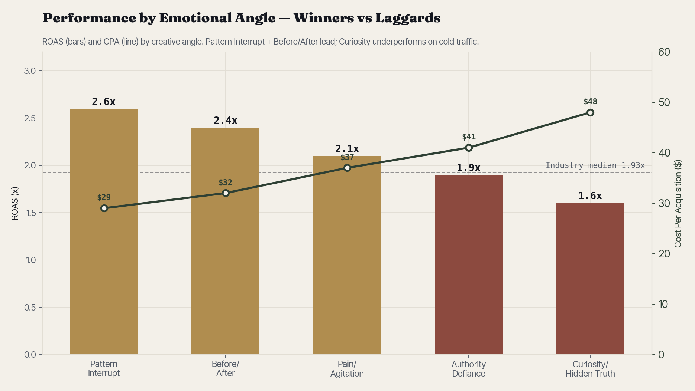
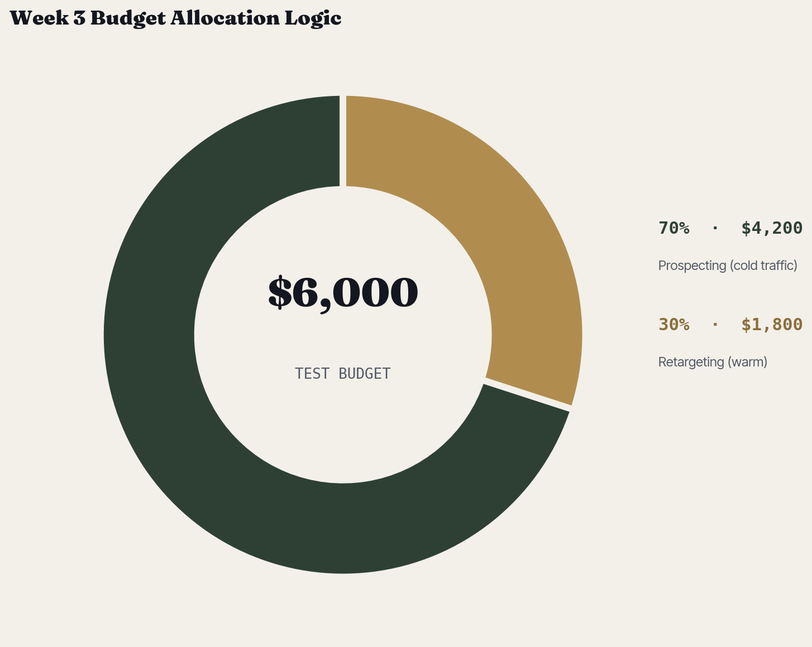
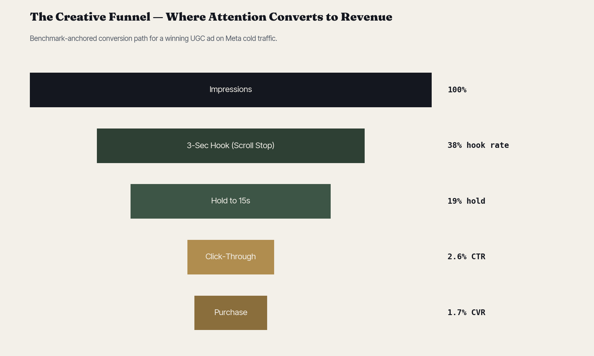

Writes assets that can be shot
Scripts, hooks, and briefs are production-shaped, not just clever copy blocks.
Creative strategist · DTC paid social
Eighteen years in behavior change, taught to write words that move money. This is a working portfolio: ad scripts, hook tests, creator briefs, teardowns, and a creative roadmap run the way I would run them inside a DTC agency.
7 chapters · benchmark-anchored
What a hiring manager should see in 90 seconds
Scripts, hooks, and briefs are production-shaped, not just clever copy blocks.
Every idea carries a hypothesis, a metric, and a kill-or-scale rule.
Weak hold, soft CTR, and poor ROAS get different fixes instead of generic refreshes.
Research, scaffolds, captions, and variants speed the work while judgment stays human.
01 / 07 · The Approach
Most creative either looks good or performs. My edge is the join between them: behavior-change psychology applied to the three seconds that decide whether an ad lives or dies.
I mine reviews, comments, and forums for the verbatim language of pain before I write a single hook.
Every concept ships with a hypothesis, a metric to watch, and a decision rule. Not a hope.
Hook rate, hold rate, CTR, CVR, CPA, ROAS, creative fatigue. I diagnose in metrics, then fix in psychology.
The benchmarks I hold work to · 2025-2026
02 / 07 · The Script
Brief: FolliGuard, a men's hair-loss supplement, cold traffic on Meta. The job is to earn trust in a skeptical category: stop the scroll, build empathy fast, then justify the buy with a believable mechanism.

A vulnerable, peer-to-peer confession will beat a clinical product demo for a stigmatized category.
Watch the 3-second hook rate and hold-through to 0:20 against the baseline hold benchmark.
If hook rate clears 30%, scale the angle and test new openers. If hold collapses, recut the mechanism.
"I haven't left the house without a hat in three years... until this week."
The hat toss breaks the scroll and qualifies the exact target."The expensive shampoos, the messy hairstyles... but the shower drain doesn't lie."
Pacing and leading turns private anxiety into recognition."It doesn't just block DHT. It feeds the follicles from the inside out."
A mechanism separates the product from snake oil."If you're tired of the hat life, check them out."
Risk reversal and humor lower friction.03 / 07 · The Hook Lab
Brief: FloraBalance, women's gut health, ages 35-55. The first three seconds decide whether an ad lives. Meta calls 20-25% a baseline hook rate and 30%+ best-in-class.

"If you look six months pregnant by 4 PM, stop scrolling."
Pain / agitation"The 'healthy' salad you ate for lunch is why you're bloated."
Curiosity / hidden truth"Throw away your probiotics. Seriously, throw them away."
Pattern interrupt"I spent $400 on gut tests, and this $30 trick fixed it."
Cost contrast"My doctor told me my bloating was 'normal.' He was wrong."
Authority defiance"Watch my stomach go from this to this in 24 hours."
Before / after"I'm 42, and I finally found the off-switch for menopause belly."
Social proof"Why does nobody tell women in their 40s their gut is dying?"
Agitation"Three signs your gut health is ruining your sleep."
Listicle"Don't buy another gut supplement until you check this."
Warning / authority
04 / 07 · The Creator Brief
Brief: VitalPaws, a joint supplement for senior dogs. UGC converts when creators are guided, not scripted. This gives the creator the hook, beats, look, and guardrails.

05 / 07 · The Teardown
Subject: a typical Lumin dark-circle UGC ad. A tired creator points at under-eye bags, applies black cream, and looks refreshed. The review below shows the pattern, the emotional angle, and the fix.
Pain/agitation plus visual contrast. The creator identifies a glaring insecurity in the first three seconds.
Fear of looking tired or old resolves into relief and restored confidence through the transformation shot.
Textbook PAS: problem, agitation, solution. Simple, fast, and familiar.
The black cream is the true pattern interrupt because skincare usually reads white or clear.
The jump to solution lacks credibility. Add a 3-second mechanism voiceover to support the emotional buy.
Partner POV, morning-routine lifestyle frame, and macro close-up hook with "Sleep won't fix this."
06 / 07 · The Roadmap
Brief: a gut-health DTC brand launching paid social for the first time. Research becomes hooks, hooks become briefs, briefs become assets, and the test becomes a scale-or-kill decision.
Mine reviews for pain language. Map four emotional angles. Write a 15-hook matrix.
Deliverable: Creative strategy doc + hook matrixTranslate winning angles into five creator briefs. Source creators. Ship product.
Deliverable: 5 production-ready UGC briefsEdit 15 variations and launch with a 70/30 prospecting-to-retargeting split.
Deliverable: 15 live ad assets + media structureReview seven-day data. Keep winning hooks and bodies. Kill the bottom 80%.
Deliverable: performance memo + month-two plan




07 / 07 · In Practice
A short exchange showing how the strategy holds up live, including the question every strategist dreads: tell me about a time it failed.
"Walk me through a time a creative concept you developed failed, and how you used data to fix it."
"We launched leaning on a Curiosity / Hidden-Truth angle. The ads looked great, but the dashboard showed a 1.6x ROAS and a $48 CPA. The funnel told the story: a solid 33% hook rate, but hold rate fell to 38%. People were stopping; the narrative stalled before the CTA. So we cut the slow middle, dropped a rapid Before/After at second four, and relaunched. Hold rate jumped to 46%, ROAS settled at 2.4x. Data told me where it broke. Psychology told me how to fix it."
Let's talk
Built for the Creative Strategist role: ad scripting, hook development, UGC briefs, performance analysis, and full creative roadmaps.
Back to top